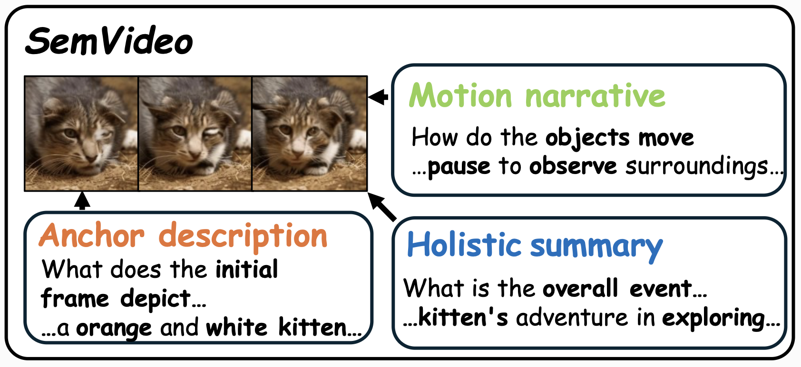
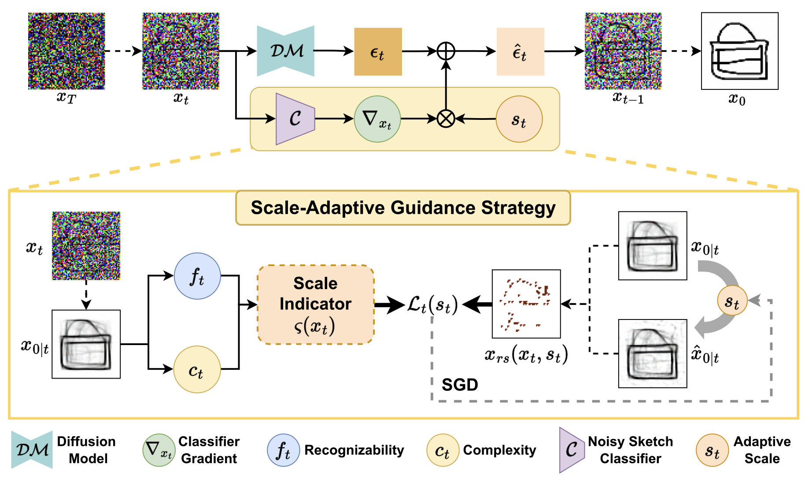
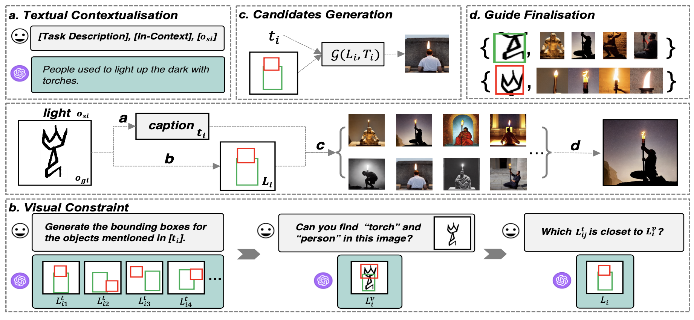

About Me
I am currently an A-Level Postdoctoral Fellow at the School of Artificial Intelligence, Beijing University of Posts and Telecommunications (BUPT), working in collaboration with Prof. Lei Li. I am also an Affiliated Academic of the SketchX Lab. I obtained my PhD from BUPT under the supervision of Prof. Honggang Zhang and Prof. Jun Guo. Previously, from 2021 to 2023, I was a joint-PhD student at the University of Surrey, supervised by Prof. Yi-Zhe Song.
My research interests focus on bridging the gap between human cognition and artificial intelligence. I aim to build a research system that spans from neural decoding to artistic abstraction and physical deployment.
My recent work is structured around three progressive pillars:
- 🧠 Neural Decoding & Perception: Investigating how to reconstruct high-fidelity visual experiences from multi-modal brain signals (fMRI/EEG), aiming to "visualize" human internal perception.
- ✨ Cognitive Abstraction & Generation: Bridging human intent and creative expression by developing models that understand abstract visual languages—ranging from ancient Oracle Bone scripts to contemporary sketches—and translate them into creative artistic forms.
- 🍀 Embodied Intelligence & Interaction: Extending visual intelligence from the digital realm to the physical world, exploring how vision-language models can empower autonomous systems in complex environments, such as smart greenhouse ecosystems.
Overall Goal: To develop "human-centric" AI that perceives like a human, creates with intent, and interacts seamlessly with the physical environment.
News
- 2026.04 Our work on Symbolic Music Generation is accepted by ACL 2026!
- 2026.04 Our work on fMRI to Video Reconstruction is accepted by CVPR 2026!
- 2026.02 Our work on Complex Sketch Generation is accepted by IJCV!
- 2026.01 One paper is been accepted by Pattern Recognition!
- 2026.01 Two papers on Visual Content Generation are been accepted by ICLR 2026!
- 2026.01 One paper is accepted by ICASSP 2026!
- 2025.11 Our work on Visual Dialog received the Best Paper Award at IC-NIDC 2025!
- 2025.08 Supported by the Young Scientists Fund of the National Natural Science Foundation of China (C-level)!
- 2025.06 Supported by Postdoctoral Fellowship Program of China Postdoctoral Science Foundation (CPSF).
- 2025.04 One paper on Oracle Understanding has been accepted by ACL 2025!
- 2024.12 Two papers have been accepted by AAAI 2025!
Selected Publications


